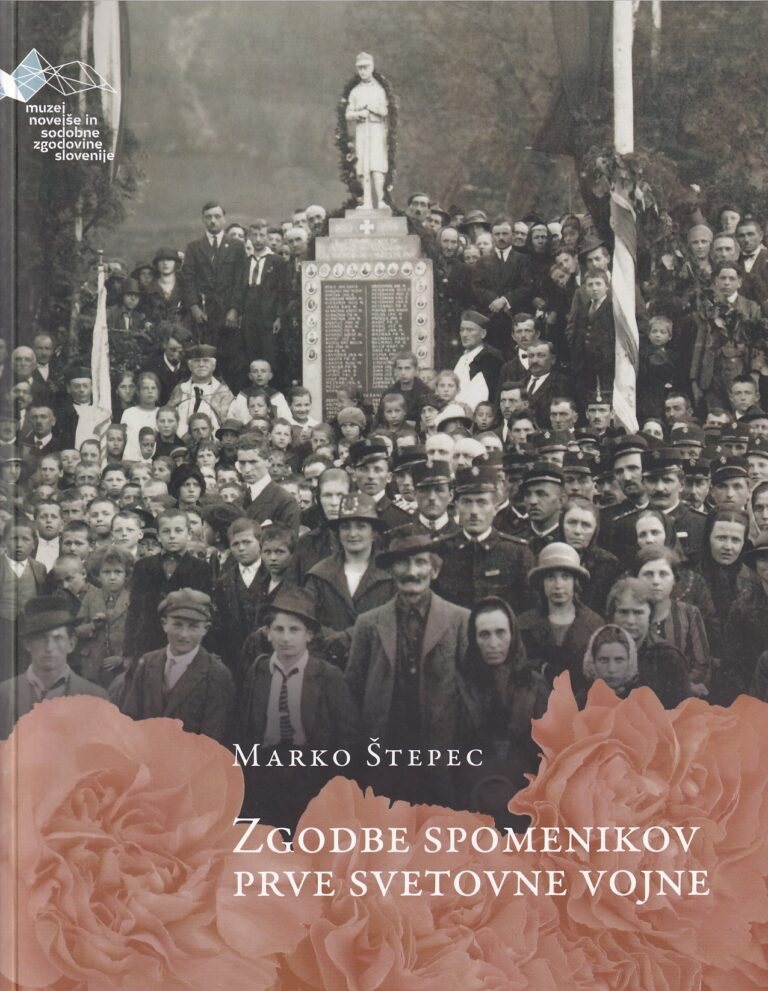

1Leta 1957 je na upravo mestnega pokopališča v Kranju prišlo nenavadno pismo. Avtor, podpisan samo kot »Eden za vse«, je zapisal: »Nam, ki smo v prvi svetovni vojni leta 1916 padli na italijanski fronti, so hvaležni kranjski rodoljubi postavili na pokopališču spomenik in vanj vklesali naša imena. Lepo zlato pobarvana so bila ta imena, toda leta so tekla in čas je to zlato barvo izlizal – imena so obledela, menda prav tako kakor spomin na nas. Blede črke slepo zro v mimoidoče, kakor prazne oči lobanje. Kdo more prebrati naša imena? Zato prosimo upravo kranjskega pokopališča, da ta imena znova prevleče s kakršnokoli barvo (mi mrtvi nismo preveč natančni)!«1 Kot se je izkazalo, je pismo sestavil mož, čigar ime je bilo po pomoti vklesano na kranjski spomenik padlim v prvi svetovni vojni. Anekdoti je mogoče pripisati pomenljivo metaforično sporočilo: zaradi odsotnosti vsakršnega uradnega spomina na prvo svetovno vojno, ki je prevladovala za časa socialistične Jugoslavije, so se morali v vojni padli vojaki tako rekoč iz onostranstva sami boriti proti lastni pozabi.
2Lahko bi rekli, da je bil ta posmrtni boj dolgoročno vendarle uspešen, saj je danes položaj precej drugačen. Že od devetdesetih let dalje, še posebej pa v obdobju obeleževanja vojnih stoletnic od leta 2014 naprej, je spomin na prvo svetovno vojno spet zaživel v slovenski javnosti in med raziskovalci. Kot posebej močno zastopano področje se je izkristaliziralo raziskovanje spomina na vojno in njene materialne spominske dediščine, razpršene po slovenskem ozemlju. O tematiki so že obširno in izčrpno pisali številni avtorji različnih provenienc, primarno s področij umetnostne zgodovine (Špelca Čopič, Damir Globočnik), zgodovine (Petra Svoljšak) in etnologije (Božidar Jezernik, Vito Hazler), pomemben pa je tudi prispevek lokalnih poznavalcev (Vili Prinčič). Precej dolg seznam je zdaj mogoče dopolniti s še enim delom, Zgodbami spomenikov prve svetovne vojne, ki ga je pripravil kustos Muzeja novejše in sodobne zgodovine Slovenije (MNSZS) dr. Marko Štepec.
3Delo je pravzaprav katalog tako rekoč vseh dokumentiranih slovenskih spomenikov, ki ohranjajo spomin na padle vojake prve svetovne vojne. V uvodu Štepec pojasni, da je knjiga vrsto let nastajala bolj kot ne v prostem času in sprva za lastno dokumentacijo, šele kasneje pa se je pojavila ideja, da bi bilo mogoče gradivo spraviti tudi v knjižno obliko. Delo sistematično našteje vse dokumentirane spomenike in omeni nekaj ključnih podatkov o lokaciji, času odkritja in avtorju, ne spušča pa se v pretirane podrobnosti, saj bi te povzročile, da bi se knjiga razrasla v večkratnik svojega obsega. Štepec se zato sklicuje predvsem na do zdaj objavljene članke, kataloge in monografije, ki so že obdelali posamezne spomenike in v katerih lahko zainteresirani bralec najde podrobnejšo literaturo. Uporabljeni raziskovalni korpus je natančno naveden in predstavljen tudi v uvodu monografije. Politika citiranja predvsem raziskovalnih del včasih v knjigi pripelje do prakse, da so citirani odlomki iz časopisnih člankov iz prve polovice 20. stoletja, v opombi pa je navedeno le znanstveno delo iz 21. stoletja, ki je ta odlomek že citiralo. Smiselno bi bilo dodati tudi podatke o prvotni objavi.
4Dodano vrednost knjige vsekakor predstavlja bogata zbirka več kot 600 fotografij spomenikov, s katerimi je ilustriran domala vsak opis posameznega pomnika. Predstavljati si je mogoče količino prevoženih in prehojenih kilometrov, potrebnih za nastanek takšne slikovne zbirke. Poleg fotografij, ki jih je na terenu posnel avtor s svojimi sotrudniki, je knjiga opremljena tudi z vrsto arhivskih fotografij spomenikov, ki so v hrambi MNSZS, in z razglednicami iz zbirke Milana Škrabca.
5Uvodnim razmislekom o raziskovanju spominske dediščine prve svetovne vojne in vlogi spomenikov za ohranjanje spomina sledijo štiri poglavja za obdobja štirih državnih ureditev, v katerih so bolj ali manj množično odkrivali spomenike padlim. Prvo poglavje razkriva, da se je spominska krajina začela vzpostavljati že med samo vojno: Avstro-Ogrska je načrtovala urejanje vojaških pokopališč, opremljenih z markantnimi osrednjimi spomeniki in standardiziranimi nagrobniki posameznih vojakov, več organov na Dunaju pa je skrbelo za urejanje teh vprašanj in celo njihovo promocijo v obliki obsežne potujoče razstave. V tem poglavju je obravnavanih 47 obeležij, predvsem s področja soške fronte, kar je – kljub težkim razmeram – tudi naravno okolje, kjer je bilo mogoče pričakovati takojšen razrast spomina na padle vojake. Štepec opozarja, da na seznam zaradi obsežnosti in dokumentiranosti v dosedanji literaturi ni vključil vseh spomenikov vzdolž nekdanje fronte in da se posveča le izbranim markantnim primerom, predvsem vojaškim pokopališčem. Pregled razkrije tipiziran način urejanja tovrstnih pokopališč, kjer grobove označujejo identični križi ali prisekani kvadri, medtem ko je bilo več inovativnosti izkazane pri osrednjih spomenikih, ki so segali od preprostih obeliskov in piramid do kompleksnih križev, ki so hkrati meči, ter kipov vojakov (Log pod Mangartom) in umirajočih levov (Črniče). Tu so še ambicioznejši arhitektonski projekti, ki so obsegali vse od templjem podobnih struktur do kapel (Vršič) in cerkva (Javorovica). Malo znan spomenik padlim italijanskim vojakom v obliki templju podobnega stolpa, ki ga je oblikoval nihče drug kot Maks Fabiani, je stal na Sveti gori, kjer je skupaj s svetiščem na vrhu hriba kot daleč naokoli viden simbol postal osrednji ideološki označevalec Goriške ravni že desetletja pred tem, ko je titulo prevzel sosednji Sabotin s svojimi kamnitimi napisi na jugoslovanski in italijanski strani. Ob primeru skromnega piramidalnega spomenika v Lokvah, katerega namembnost je bila spremenjena v spomenik padlemu partizanu, Štepec razmišlja tudi o muhastem spominu in pozabi, ki lahko skozi reciklažo iste materialne osnove ohranja spomin na žrtve povsem različnih vojn.
6Daleč najobsežnejše poglavje monografije je namenjeno spomenikom padlim, postavljenim za časa medvojne Jugoslavije. Obravnavanih je 224 spominskih lokacij po vsej Sloveniji, postavljenih med letoma 1918 in 1941. (Kot obrobna pripomba naj bo omenjeno, da se bralcu ponekod zdi, da kakšen spomenik ni uvrščen v pravilno časovno kategorijo; zakaj je denimo kostnica v Kobaridu iz tridesetih let v prvem poglavju, škofjeloški kip Antona Hafnerja iz leta 2006 pa v poglavju o medvojnih spomenikih?) Kot je že dobro znano iz predhodnih raziskav, je spomin na vojno kraljevi Jugoslaviji povzročal preglavice, saj so se v isti državi znašli teritoriji, ki so se med vojno borili na nasprotnih straneh. Iz tega se je porajala napetost, ker so imeli srbski vojaški veterani privilegiran položaj v uradnem državnem spominu na vojno in večje materialne koristi, medtem ko je bil spomin na padle vojake nekdanje avstro-ogrske vojske potisnjen na obrobje, preživeli veterani pa precej manj preskrbljeni. Ne glede na to, da Beograd ni ravno spodbujal ohranjanja spomina na padle vojake s slovenskega območja, pa se je tu vendarle razvilo precej močno gibanje obeleževanja spomina na pokojnike z zbiranjem njihovih imen in odkrivanjem njim posvečenih spomenikov. Lokalne skupnosti so marsikdaj same oskrbele obeležja svojim padlim, da bi v odsotnosti grobov padlih svojcev imele kraj za žalovanje, sčasoma pa so se te akcije sistematizirale skozi delovanje Zveze slovenskih vojakov, kasneje Zveze bojevnikov, ki je skrbela za odkrivanje novih in novih spomenikov. Projekte je zveza do določene mere politizirala, saj so govorci na svečanostih v govore, kljub deklariranemu apolitičnemu in pietetnemu značaju svečanosti, radi vtihotapili tudi kritiko beograjskega režima.
7Po slovenskem delu Jugoslavije je tako zraslo na ducate spomenikov, ki kažejo precejšnjo oblikovno, arhitekturno in kiparsko raznovrstnost pa tudi raznoliko stopnjo obrtniške spretnosti, s katero so bili izdelani. Manjše in revnejše skupnosti so si lahko privoščile spominske plošče, vzidane predvsem na cerkvah in poleg seznama imen padlih – neogibnega elementa vseh takšnih spomenikov – opremljene še s skromnim simbolom ali reliefom, včasih tudi s porcelanskimi fotografijami padlih. Skupnosti, ki so lahko za spomin svojim padlim odtegnile nekoliko več finančnih sredstev, so se odločale za preproste samostoječe spomenike, opremljene z dekoracijami, kot so kamnite granate, ali pa za figuralne spomenike z deli slovenskih kiparjev. Marsikdaj je šlo za kipe vojakov, ki pa niso malodane nikoli v kakršnikoli aktivni, ofenzivni drži, temveč so melanholično zazrti sami vase, pretreseni in strti od vojnih grozot, če že ne padajo v smrtnem krču ranjeni proti tlom. Marsikateri vojak niti ni bil prikazan oblečen v avstrijsko, torej zgodovinsko verodostojno uniformo; mnogim so raje natikali francoske čelade, kip vojaka na spomeniku na Dovjem, ki je bil v pravilni uniformi, pa je zaradi tega pretrpel vandalski napad.
8Del naročnikov se je zadovoljil s shematskimi rešitvami, med katerimi lahko opazimo priljubljeno, neprestano ponavljajočo se podobo na tleh ležečega mrtvega vojaka pred z (vzhajajočim ali zahajajočim?) soncem oblito pokrajino, ki spremlja številne plošče, spet drugi spomeniki velikopoteznejših naročnikov pa so zaradi svojih snovalcev postali neobhoden del slovenskega arhitekturnega kanona, v prvi vrsti gre seveda za dela Jožeta Plečnika (Breznica, Horjul, Komenda) in Ivana Vurnika (Bohinjska Bela, Črnuče, Trbovlje). Kot ključna slovenska kraja spomina na vojno so se vzpostavile ljubljanske Žale, kjer je bila leta 1939 odprta osrednja kostnica žrtev vojne, opremljena z znanim kipom Kranjskega Janeza, ter bazilika na Brezju, kjer so veterani snovali načrte za izgradnjo monumentalnega groba neznanega slovenskega vojaka, ki pa kljub široko zasnovani propagandni akciji niso bili nikoli uresničeni. Posebej zanimiva kategorija, ki jo Štepec kot morda prvi raziskovalec natančneje osvetli, so zasebni pomniki, postavljeni na pobudo družine v spomin na padlega svojca. Gre za preprosta znamenja, najpogosteje v obliki razpel, ki so lahko opremljena s pojasnjevalnim napisom. Zanimiva je tudi zgodba ne več obstoječega spomenika v Polenšaku, ki ilustrira, kako lahko zasebne iniciative trčijo ob druge interese v lokalni skupnosti – v tem primeru ob župnikovo željo, da krajani namesto v spomenik investirajo v nov oltar, kar je pripeljalo do tožbe in odstranitve spomenika.
9Potem je prišla nova svetovna vojna. Ker je spomin nanjo v socialistični Jugoslaviji postal osnova za državno spominsko politiko, je bila prva svetovna vojna potisnjena globoko v ozadje, njen obsežni spomeniški korpus pa je bolj kot ne sameval in propadal. Postavljena je bila zgolj peščica novih spomenikov padlim v prvi svetovni vojni (Štepec jih našteje pet), od katerih je bila večina zvezana s spominom na drugo svetovno vojno, saj je šlo za skupne spomenike padlim v obeh vojnah.
10Z osamosvojitvijo in stoletnicami vojnih dogodkov je zanimanje, kot omenjeno, spet poraslo. Obudile so se komemoracije ob pomnikih, stare spomenike so začeli obnavljati in postavili so nekaj novih; Štepčev pregled jih obsega 21. Če so za časa socialistične Jugoslavije nekatere padle partizane pridružili padlim vojakom avstrijske vojske, pa se je po letu 1991 razmahnila navada, da so plošče padlim v prvi svetovni vojni vključili v ali ob spomenike padlim domobrancem in žrtvam povojnih pobojev. V sklepu monografije so predstavljeni še primeri grobov in spomenikov slovenskih vojakov v tujini pa tudi drugi reprezentativni primeri spomenikov, pokopališč in kostnic z balkanskega bojišča, vzhodnega bojišča, italijanskega dela soške fronte in avstrijskega zaledja, vključno z nekaterimi najbolj svežimi primeri, kot je spomenik padlim slovenskim vojakom v slovaškem Becherovu iz leta 2024.
11Knjiga predstavlja pomembno pridobitev na področju raziskav slovenskega spomina na prvo svetovno vojno. Katalog spomenikov padlim vojakom v monografiji, ki se dobro dopolnjuje z nedavnim delom Vita Hazlerja Dediščina spomenikov prve svetovne vojne, je brez dvoma eden najpopolnejših do zdaj. Če smo kritikantsko pedantni, tudi tu sicer velja, da popolnosti ni, saj pričujoči pregled ne zaobjame niti ne more zaobjeti čisto vsega (skromna bera spomenikov iz časa socializma bi se lahko recimo dopolnila s spominsko ploščo Antonu Hafnerju v Godešiču iz leta 1968). A to so podrobnosti, ki ne morejo pokvariti vtisa celote. Posebno dragocenost predstavljajo objavljene fotografije, pridobljene s terenskim delom in paberkovanjem po arhivskih fotografskih fondih, ki so v takem obsegu tukaj prvič zbrane na enem mestu. Knjiga tako učinkuje tudi kot nekakšen vodnik po spominski dediščini prve vojne in kar sama vabi k obisku ter ogledu predstavljenih spomenikov, pa tudi k njihovemu ohranjanju za zanamce.
1. 1Bodičar, »Gorenjske bodice«, Glas, 13. 9. 1957, 7.